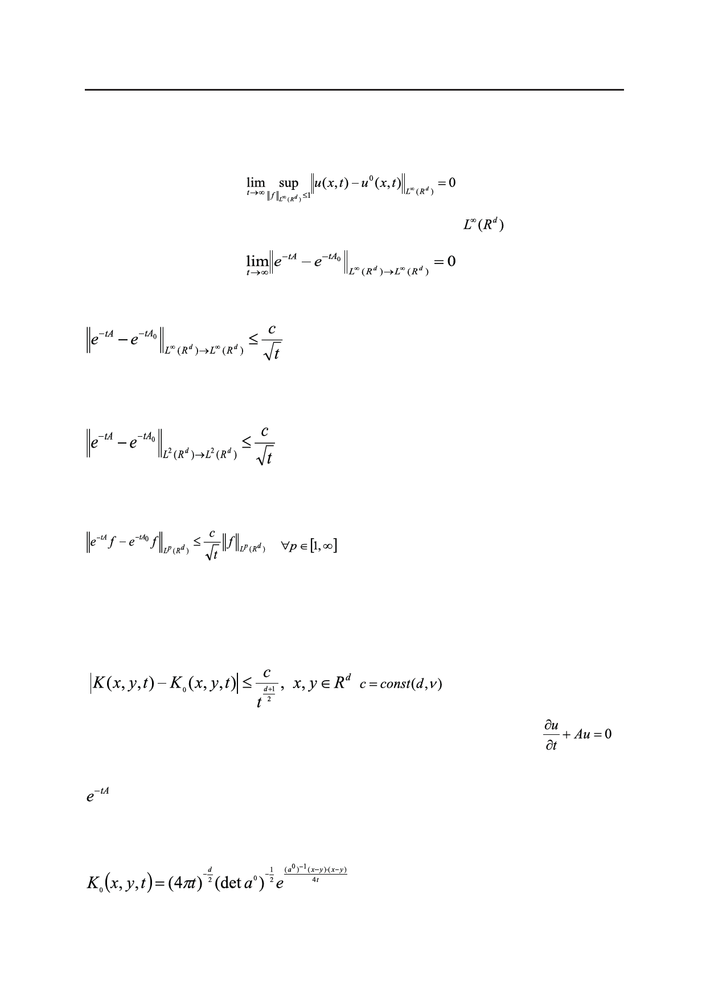

С.Е. Пастухова, О.А. Евсеева
Оператор A0 существенно более прост, чем исходный, хотя имеет ту же структуру. В
[1] было доказано предельное соотношение
,
означающее сходимость полугруппы по операторной норме в
, т.е.
.
Позже в [2] удалось установить оценку скорости этой сходимости по времени
(4)
с константой, зависящей только от размерности d и постоянной эллиптичности v.
Кроме того, была доказана оценка
(5)
с константой такого же типа, что в (4) [3, 4].
Наконец, недавно в работе [5] предложена оценка
(6)
c единой константой для всех p. Предыдущие оценки (4) и (5) вытекают отсюда при p = ∞ и p = 2,
для вероятностной интерпретации уравнения диффузии особенно важен случай p = 1 .
Операторные оценки можно вывести из оценок поточечного характера. Примеры
операторных оценок приведены выше (4 –6). Примером поточечной является оценка
,
.
(7)
Здесь K(x,y,t) – фундаментальное решение для параболического уравнения
,
то есть решение задачи (1), если в качестве начальной функции взять дельта-функцию
δ(x–y), сосредоточенную в точке y (иными словами, K – ядро интегрального оператора
); K0(x,y,t) – аналогичный объект для усредненного уравнения.
Ввиду постоянства коэффициентов усредненного уравнения можно точно найти K0 с
помощью преобразования Фурье, а именно,
.
(8)
Российский технологический журнал 2017 Том 5 № 5
63